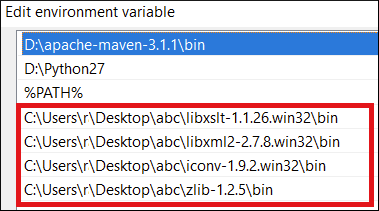

Supported XSLT Processors
Oxygen XML Editor includes the following XSLT processors:
- Xalan 2.7.2 - Xalan-Java is an XSLT processor for transforming XML documents into HTML, text, or other XML document types. It implements XSL Transformations (XSLT) Version 1.0 and XML Path Language (XPath) Version 1.0.
- Saxon 6.5.5 - Saxon 6.5.5 is an XSLT processor that implements the Version 1.0
XSLT and XPath with a number of powerful extensions. This version of Saxon also includes
many of the new features that were first defined in the XSLT 1.1 working draft, but for
conformance and portability reasons these are not available if the stylesheet header
specifies
version="1.0". - Saxon 9.9.1.5 Home Edition (HE), Professional Edition (PE) - Saxon-HE/PE implements the basic conformance level for XSLT 2.0 / 3.0 and XQuery 1.0. The term basic XSLT 2.0 / 3.0 processor is defined in the draft XSLT 2.0 / 3.0 specifications. It is a conformance level that requires support for all features of the language other than those that involve schema processing. The HE product remains open source, but removes some of the more advanced features that are present in Saxon-PE.
-
Saxon 9.9.1.5 Enterprise Edition (EE) - Saxon EE is the schema-aware edition of Saxon and it is one of the built-in processors included in Oxygen XML Editor. Saxon EE includes an XML Schema processor, and schema-aware XSLT, XQuery, and XPath processors.
The validation in schema aware transformations is done according to the XML Schema 1.0 or 1.1. This can be configured in Preferences.Note: Oxygen XML Editor implements a Saxon framework that allows you to create Saxon configuration files. Two templates are available: Saxon collection catalog and Saxon configuration. Both of these templates support content completion, element annotation, and attribute annotation.Note: Saxon can use the ICU-J localization library (saxon9-icu.jar) to add support for sorting and date/number formatting in a wide variety of languages. This library is not included in the Oxygen XML Editor installation kit. However, Saxon will use the default collation and localization support available in the currently used JRE. To enable this capability, follow these steps:- Download Saxon 9.9.1.5 Professional Edition (PE) or Enterprise Edition (EE) from http://www.saxonica.com.
- Unpack the downloaded archive.
- Create a new XSLT transformation scenario (or edit an existing one). In the XSLT tab, click the Extensions button to open the list of additional libraries used by the transformation process.
- Click Add and browse to the folder where you unpacked the downloaded archive and choose the saxon9-icu.jar file.
Note that the saxon9-icu.jar should NOT be added to the application library folder because it will conflict with another version of the ICU-J library that comes bundled with Oxygen XML Editor.
- Saxon-CE (Client
Edition) is Saxonica's implementation of XSLT 2.0 for use on web browsers. Oxygen XML Editor provides support for editing stylesheets that contain Saxon-CE
extension functions and instructions. This support improves the validation, content
completion, and syntax highlighting.Note: Saxon-CE, being JavaScript-based, was designed to run inside a web browser. This means that you will use Oxygen XML Editor only for developing the Saxon-CE stylesheet, leaving the execution part to a web browser. See more details about executing such a stylesheet on Saxonica's website.
-
Xsltproc (libxslt) - Libxslt is the XSLT C library developed for the Gnome project. Libxslt is based on libxml2, the XML C library developed for the Gnome project. It also implements most of the EXSLT set of processor-portable extensions, functions, and some of Saxon's evaluate and expression extensions.
Oxygen XML Editor uses Libxslt through its command-line tool (Xsltproc). Depending on your operating system, you must download the Libxslt libraries on your machine from http://xmlsoft.org/XSLT/downloads.html and place them in a local folder. Then you need to update thePATHenvironmental variable to contain the parent folder where the xsltproc executable is located.Tip: As an example, a Windows installation of the Xsltproc engine would follow these steps:- Go to http://ftp.zlatkovic.com/libxml.en.html and download the following ZIP files: iconv-1.9.2.win32.zip, libxml2-2.7.8.win32.zip, libxslt-1.1.26.win32.zip, zlib-1.2.5.win32.zip.
- Unzip all of them into the same folder of your choice.
-
Edit the
PATHenvironment variable and add the bin folder for all four archives:
- Restart Oxygen XML Editor.
Result: You can now use the xsltproc processor as an XSLT engine in the XSLT transformation scenario.
Note: The Xsltproc processor can be configured from the XSLTPROC options page.CAUTION: There is a known problem where file paths that contain spaces are not handled correctly in the LIBXML processor. For example, the built-in XML Catalog files of the built-in document types (DocBook, TEI, DITA, etc.) are not handled properly by LIBXML if Oxygen XML Editor is installed in the default location on Windows (C:\Program Files). This is because the built-in XML catalog files are stored in the [OXYGEN_INSTALL_DIR]/frameworks subdirectory of the installation directory, and in this case it contains a space character. -
MSXML 4.0 (Deprecated) - MSXML 4.0 is available only on Windows platforms. It can be used for transformation and validation of XSLT stylesheets.
Oxygen XML Editor uses the Microsoft XML parser through its command-line tool msxsl.exe.
Since msxsl.exe is only a wrapper, Microsoft Core XML Services (MSXML) must be installed on the computer. Otherwise, you will get a corresponding warning. You can get the latest Microsoft XML parser from Microsoft web-site.
-
MSXML .NET (Deprecated) - MSXML .NET is available only on Windows platforms. It can be used for transformation and validation of XSLT stylesheets.
Oxygen XML Editor performs XSLT transformations and validations using the .NET Framework XSLT implementation (System.Xml.Xsl.XslTransform class) through the nxslt command-line utility. The nxslt version included in Oxygen XML Editor is 1.6.
You should have the .NET Framework version 1.0 already installed on your system. Otherwise, you will get the following warning:
MSXML.NET requires .NET Framework version 1.0 to be installed. Exit code: 128.You can get the .NET Framework version 1.0 from the Microsoft website.
-
.NET 1.0 (Deprecated) - A transformer based on the System.Xml 1.0 library available in the .NET 1.0 and .NET 1.1 frameworks from Microsoft (http://msdn.microsoft.com/xml/). It is available only on Windows.
You should have the .NET Framework version 1.0 or 1.1 already installed on your system. Otherwise, you will get the following warning:
MSXML.NET requires .NET Framework version 1.0 to be installed. Exit code: 128.You can get the .NET Framework version 1.0 from the Microsoft website.
-
.NET 2.0 (Deprecated) - A transformer based on the System.Xml 2.0 library available in the .NET 2.0 Framework from Microsoft. It is available only on Windows.
You should have the .NET Framework version 2.0 already installed on your system. Otherwise, you will get the following warning:
MSXML.NET requires .NET Framework version 2.0 to be installed. Exit code: 128.You can get the .NET Framework version 2.0 from the Microsoft website.
For information about configuring the XSLT preferences, see the XSLT options section.